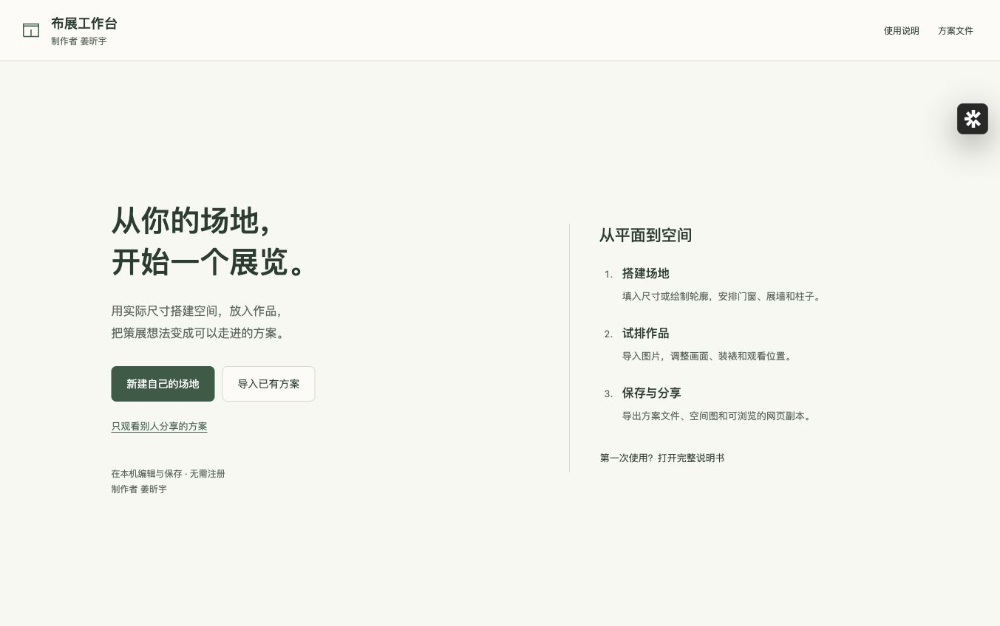
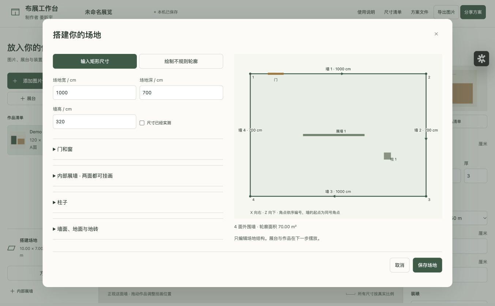
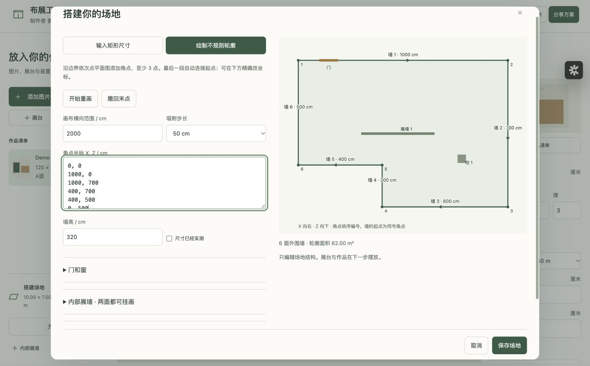
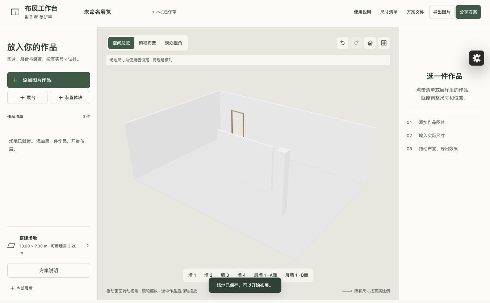
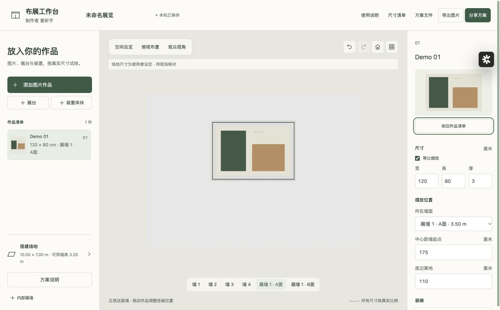
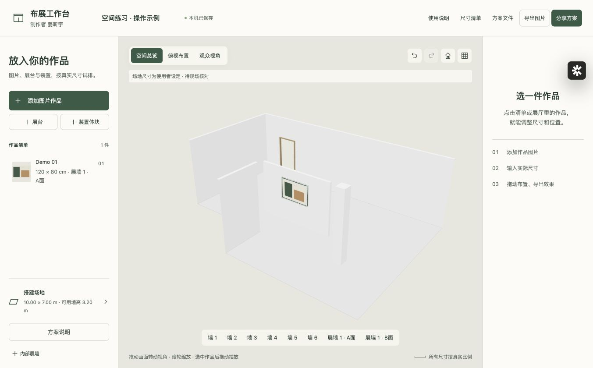
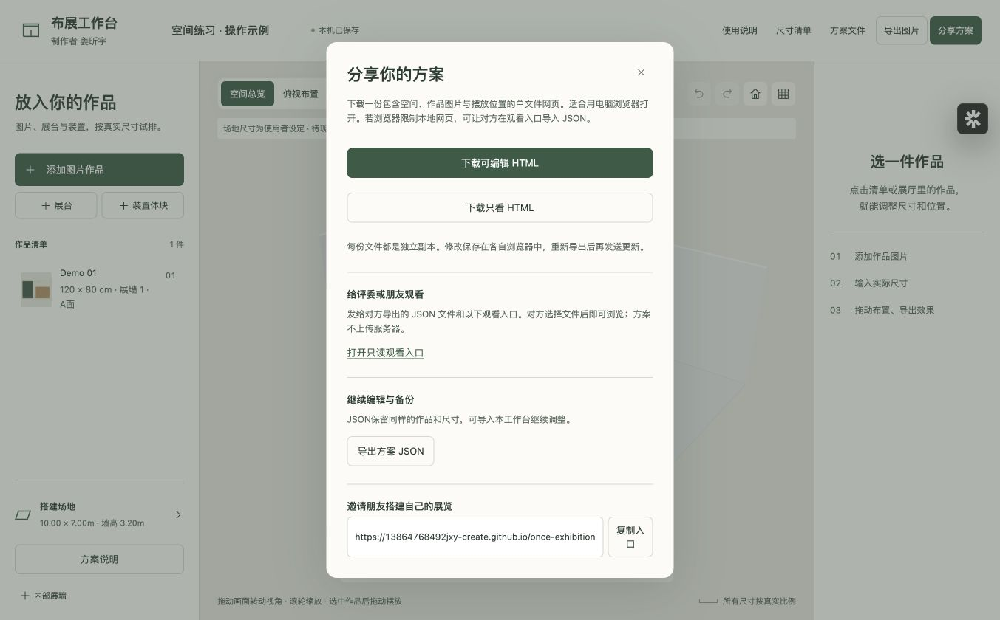

用自己的尺寸搭建场地，再把作品放进去。按下列顺序完成一次从建模到分享的布展。制作者 姜昕宇。
01 开始使用与准备材料
这个工作台不提供预设场馆。先搭建自己的空间，再在其中布展。制作者 姜昕宇。
- 用电脑浏览器打开工作台。初次进入没有展厅；点“新建自己的场地”。已经有方案时，点“导入已有方案”选择 JSON 文件。
- 准备场地净宽、净深、墙高，门窗到墙起点的距离，柱子位置与展墙尺寸。建议先画一个现场草图，统一记录厘米。
- 准备 JPG、PNG 或 WebP 图片。图像文件用于预演，实际画面宽高仍需手动填写。场地照片不会自动识别成三维模型。
| 需要做什么 | 使用哪个入口 |
|---|
| 建立或修改场地 | 新建自己的场地 / 左下角“搭建场地” |
| 继续已有方案 | 导入已有方案 / 方案文件 → 导入方案文件 |
| 只供观看 | 工作台链接末尾加 ?mode=view，或点击观看入口 |
| 查操作步骤 | 右上角“使用说明” |

开始使用与准备材料 · 实际工作台界面建议使用较新的 Chrome、Edge 或 Safari。需要浏览器支持 WebGL。手机适合浏览与小幅调整；精细建模、批量图片与大图导出建议用电脑。
02 输入矩形场地
- 点击“新建自己的场地”，保持“输入矩形尺寸”。填写场地宽、深和墙高，单位都是厘米；例如 10 米应填 1000。示例数字仅说明单位，并非预置场地。
- 平面图的 X 向右，Z 向下。矩形从左上角开始依次编号；墙 1 的起点是角点 1，墙 2 的起点是角点 2，以此类推。
- 已经现场测量的尺寸可勾选“尺寸已经实测”；构想中的空间不勾选。填完点“保存场地”，进入三维布展。
- 以后点左下角“搭建场地”即可再改。外围墙数量变化后，找不到原墙的作品会回到待布置清单；请检查门窗墙号与所有作品位置。

输入矩形场地 · 实际工作台界面宽、深是室内净尺寸；模型用于空间预演。平面范围至少 1 平方米，墙高 100–3000 厘米。输入不会自动成为现场实测依据。
03 绘制斜墙、L 形或不规则轮廓
- 切换到“绘制不规则轮廓”。点“开始重画”后，按边界顺序点击右侧平面图添加角点。每个点是墙的转角，不要跨到轮廓对角去画。
- 至少放 3 点，最多 40 点。末点会自动连接第一个点；点击起点或“结束绘制”结束。画错一点可按“撤回末点”。
- “画布横向范围”决定能画多大的范围，不是场地实际宽度。吸附可选 10、50 或 100 厘米。粗画以后，在“角点坐标 X, Z / cm”中逐行精确修正。
- 每行填两个数字，顺序是 X, Z，可用逗号或空格分隔。可以输入负坐标。相邻点至少相隔 10 厘米，轮廓边线不能相交。
- 墙号依角点顺序生成。完成轮廓后再加门窗；更改角点顺序会改变墙的方向与起点，应重新核对。
| 示例角点（厘米） | 含义 |
|---|
| 0, 0 → 1000, 0 → 1000, 400 | 沿上边及右上边走 |
| 600, 400 → 600, 700 → 0, 700 | 折入凹角后闭合成 L 形 |

绘制斜墙、L 形或不规则轮廓 · 实际工作台界面本版支持单个连续闭合轮廓，不支持轮廓中挖庭院、多个楼层或曲面墙。室内独立墙体应使用“内部展墙”。
04 添加门和窗
- 在“搭建场地”中展开“门和窗”，点“添加门窗”。先选择门或窗，再选择所在的外围墙。
- “起点”从该墙同号角点沿墙方向量，表示开口近端到起点的距离，不是开口中心位置。墙号与方向以平面图为准。
- 填写开口宽、高和底边离地。门通常从地面开始，因此底边离地填 0；窗应填窗洞下沿的实际高度。
- 每添加一处，平面图会用不同颜色标记门和窗。展开右侧图观察是否位于正确墙段，再点“保存场地”。
- 若提示超出墙面，检查“起点＋宽”是否大于墙长，以及“离地＋高”是否大于墙高。同一墙的门窗不能互相重叠。
门窗数量最多 60 处。本版建模的是开口及简化窗框，不包含精确门扇开启、五金和施工节点；内部展墙暂不支持开门窗。
05 内部展墙、柱子和表面
- 展开“内部展墙”，点“添加内部展墙”。A 点与 B 点是墙体中线两端的 X、Z 坐标；填写墙高和墙厚。端点沿前面建立的坐标系测量。
- 每片展墙会提供 A 面、B 面两个可挂画面。回到布展界面后，在作品“所在墙面”中选择相应面。新增展墙的初始位置只供调整，保存前请改成需要的值。
- 展开“柱子”，添加后选择圆柱或方柱。输入柱子中心 X、Z，以及圆柱直径或方柱宽、深。方柱与坐标轴平行。
- 柱子高度不能超过场地墙高，柱子中心和内部展墙应在轮廓内。移除一片展墙后，原来挂在这片墙上的作品会回到待布置清单。
- 在“墙面、地面与地砖”中选择整体颜色。填写地砖边长可显示砖缝；留空表示无砖缝。砖缝以坐标原点对齐，当前不能单独设置每个墙面的颜色。

内部展墙、柱子和表面 · 实际工作台界面内部展墙是场地结构，可在两面挂画。“展台”和“装置体块”是布展对象，用于表达占地与体量。通行和安装条件仍需结合现场确认，本工具不自动给出施工或疏散结论。
06 导入作品与设定真实尺寸
- 点“添加图片作品”，选择一张或多张图片。支持 JPG、PNG、WebP；HEIC、TIFF 或 PSD 请先导出显示用 JPG。单张文件上限 50 MB。
- 填写初始作品宽度、底边离地和初始墙面。高度按图片比例计算。批量导入默认先放入作品清单，避免一股脑挤在墙上。
- 点击清单里的作品，在右侧修改名称、画面宽和高。保持“等比缩放”开启可避免拉伸；确需单独改宽高时再关闭。
- 尚未布置的作品可选墙后点“挂到所选墙面”。“收回作品清单”只暂时不上墙；“移除”才会从当前方案删除，可用撤销恢复。
- 可复制作品，也可以导入透明 PNG 作文字或图形的显示参考；本版图片显示副本会铺白底，不保留透明背景。文字排版应先在外部软件做好，再作为图片使用。

导入作品与设定真实尺寸 · 实际工作台界面本版每个方案最多 200 个布展对象。图片会生成最长边不超过 1600 像素的显示副本，原文件不变；这些副本不能代替喷绘原图。
07 装裱、挂画和位置
- 选作品后，可选无框、黑框、白框或浅木框。框条宽度是正面可见宽度；卡纸是图像与框条之间的留白。
- “宽、高”指画面尺寸。“外框宽、高”指含装裱的总尺寸；若外框尺寸已锁定，修改卡纸会重新计算可用画面。右侧说明会同时列出画面和含框尺寸。
- 作品位置用“所在墙面”“中心距墙起点”“底边离地”确定。中心距起点沿该墙方向量；底边离地按装裱最外缘计算。
- 在墙面正视图中，选中作品再拖动，可同时调横向位置和高度。俯视图更适合检查水平位置；精确点位使用右侧数字输入。
- 超过墙面、遮到门窗时界面会提示。作品高度和横向位置会被限制在墙面范围内；如果作品本身太大，需要手动缩小或换墙。
| 参数 | 测量参照 |
|---|
| 画面宽、高 | 图像本身，不含卡纸与框条 |
| 含框宽、高 | 最外侧框条的边缘 |
| 中心距墙起点 | 作品中心沿墙到该墙起点 |
| 底边离地 | 装裱最下边缘到地面 |
卡纸字段为最小留边。若强制输入的外框比例与图像比例不同，两组相对边的留白可能不同；请检查比例后再用于实际装裱。
08 展台、装置与查看方式
- 点“展台”或“装置体块”，再在右侧输入宽、高、厚、底边离地、X、Z 与旋转角度。体块是尺寸占位，不是复杂雕塑的精确模型。
- “空间总览”可拖动旋转、滚轮缩放。靠近镜头的墙会剖开以便查看室内，墙体并未从方案删除。
- “俯视布置”用于检查占地、通道和作品分布；作品编号与左侧清单对应。点底部墙号可看该墙正视图。
- “观众视角”中拖动环顾，按屏幕方向键移动；电脑可用 W、A、S、D 或方向键。退出观众视角可点“空间总览”。
- 重置视角会恢复当前模式的初始取景；网格按钮显示辅助网格。撤销、重做支持最近 20 步，也可用 Command/Ctrl＋Z、Shift＋Command/Ctrl＋Z。

展台、装置与查看方式 · 实际工作台界面观看模式会避让已建建筑墙柱，但它不是精确的人流或碰撞仿真。多个作品彼此遮挡或重叠时，仍需用总览、俯视与正视图共同检查。
09 方案说明与尺寸清单
- 点左下角“方案说明”，填写展览名称、策展人或团队、方案编号和策展说明。文字会随 JSON 与 HTML 分享。
- 用于匿名比赛时，可以只填写方案编号，不填作者姓名，并检查作品文件名、作品名和简介中是否还带有身份信息。工具署名与策展人署名是两项不同内容。
- 点顶部“尺寸清单”，查看当前平面图和场地、门窗、柱子、各墙、各作品的尺寸。清单随当前方案参数更新。
- “下载尺寸表 CSV”可在表格软件打开。“打印 / 存为PDF”调出浏览器打印窗口，建议使用横向纸张，打印前检查页数与分页。
尺寸清单记录的是当前输入与计算结果，不是现场测量报告。它不提供具体挂钩、钉点或结构固定方式。
10 保存、备份与恢复
- 编辑会自动保存到当前浏览器的本机存储。顶部“本机已保存”表示这台电脑的当前浏览器已经保存草稿。它不会把变化写回打开的 HTML 或原 JSON 文件。
- 重要节点进入“方案文件”，点“导出方案文件”保存 JSON。图片显示副本、场地尺寸、位置、装裱和说明一起放进文件。
- 换电脑或交给别人接手时，发送 JSON，对方从工作台“导入方案文件”打开。导入前原草稿会留一个恢复副本；“恢复上一个草稿”可以交换回来。
- 新建另一场展览同样保留上一份恢复副本。恢复副本只有一个，会被下一次导入或新建替换；多方案长期保留应分别导出文件。
- 清除浏览器网站数据、使用无痕模式或换浏览器，可能找不到原草稿。不要把浏览器缓存当作唯一备份。
如果显示本机保存失败，立即导出 JSON。下载没自动开始时，点屏幕右下角“保存文件”，并在浏览器下载列表中确认文件确实存在。
11 分享给朋友或评委
- “复制入口”分享的是工作台本身，不是你当前的展览。对方只收到入口链接时，不会自动看到你的作品。
- 最稳妥的网页观看方式：导出 JSON，同时把观看入口发给对方；对方点击“选择方案 JSON”，即可在浏览器中看空间、各墙和作品。文件在本机读取，不上传。
- 需要对方修改时：发送 JSON，并让对方在普通编辑入口导入；或者在“分享方案”中下载“可编辑 HTML”。
- 只供浏览时：下载“只看 HTML”，或使用观看入口导入 JSON。HTML 包含程序、空间与图片，适合在电脑浏览器中打开；在微信等内置浏览器里，建议先下载，再用电脑浏览器打开。
- 更新方案后，需要重新导出和发送。之前发出的副本不会自动更新。只看模式是操作方式，不是密码、权限保护或防复制机制。
| 交付内容 | 适用场景 |
|---|
| 工作台链接 | 邀请其他人创建自己的场地与方案 |
| JSON＋观看入口 | 评委或朋友直接在网页中浏览 |
| JSON / 可编辑 HTML | 对方继续修改、不同电脑接力 |
| 只看 HTML | 带着整份展览浏览；适合电脑 |

分享给朋友或评委 · 实际工作台界面当前没有云端上传、公开方案托管、多人同步、报名或评审后台。未来比赛可以用这个工具制作和观看方案，报名与收件由主办方安排。
12 导出图片、模型与比赛交付
- “导出图片”可选当前视角、俯视布置图或各面墙正视图，宽度可选 2560 或 3840 像素。多面墙会合并成长图，避免连续多次下载。
- 导出前确认所有作品图片加载完成。勾选附加说明，会在图中带上展览名称、场地信息和工具署名。
- “方案文件 → 导出三维模型 GLB”导出完整场地与已摆放作品。坐标单位为米：X 向平面右侧，Y 向上，Z 向平面下方；导出原点移到轮廓最小 X、Z 的地面位置。
- GLB 不受当前剖切视角影响。它可用于常见三维软件继续处理；本工作台目前不支持把外部 GLB、Blender、CAD 或 SketchUp 文件重新导入为可编辑建筑。
- 若用于比赛，建议每份提交包含：一个带图 JSON、一张总览 PNG、一张俯视 PNG、一份策展说明。主办方收集后，评委用观看入口分别打开 JSON。
PNG 与 GLB 是方案呈现文件。精确施工、材料加工和作品喷绘，应另外使用经过核定的尺寸与原作文件。
13 常见问题与当前边界
| 遇到的问题 | 处理方式 |
|---|
| 空白或看不到三维 | 先新建场地；若仍无三维，换较新的浏览器，检查 WebGL / 硬件加速是否可用。 |
| 输入轮廓后保存失败 | 按边界顺序检查角点，去掉重复末点，避免自交；每行只填两个数字。 |
| 门窗提示超出墙面 | 核对墙号、起点＋宽，以及离地＋高。更改轮廓后重新核对开口。 |
| 作品在清单中但不上墙 | 查看是否标记“待布置”；选墙后点击“挂到所选墙面”。 |
| 图片格式不支持 | 先将 HEIC、TIFF、PSD 转成 JPG / PNG / WebP。 |
| 文件发出去看不到最新修改 | 本机保存不会改写旧文件；重新导出 JSON 或 HTML 后再发送。 |
| 本地 HTML 打不开 | 使用在线工作台导入 JSON；只观看则使用 ?mode=view 入口。 |
| 图片多导致卡顿 | 减少同时导入数量，关闭其他重负载页面；用 JSON 及时备份。 |
| 无法找回草稿 | 先在“方案文件”尝试恢复上一个草稿；否则导入主动导出的备份。 |
本版不支持多层建筑、曲面墙、洞中洞轮廓、复杂雕塑建模、实时多人编辑、在线投稿和评分。手机与不同浏览器的下载体验可能不同，正式交付以实际打开文件为准。